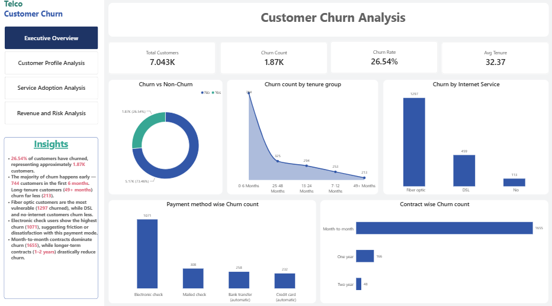
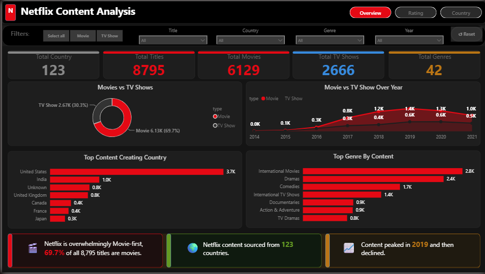
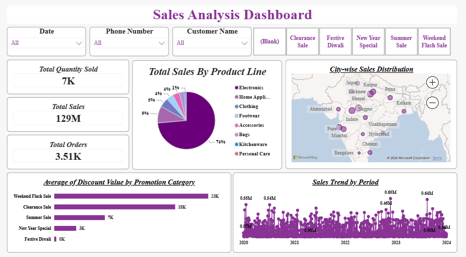
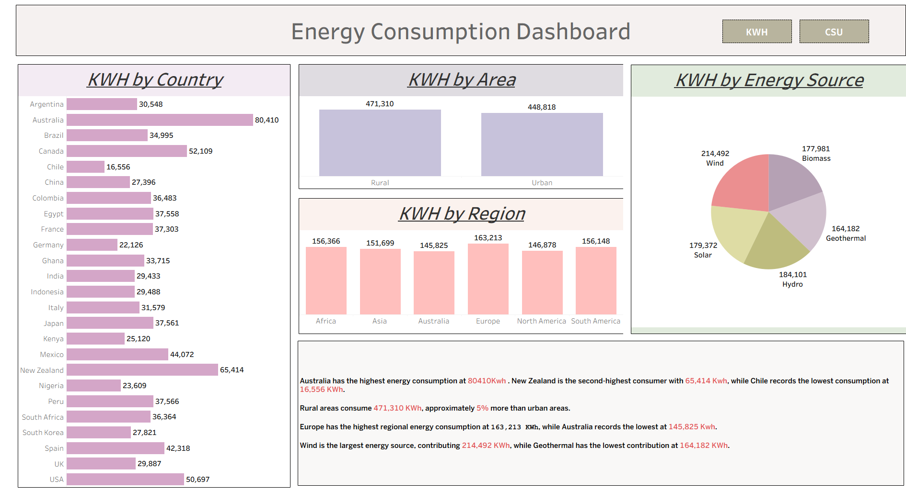

Data Analytics & Data Science
Business insights · BI dashboards · SQL analytics
Open to entry-level opportunitiesDATA ANALYST · PYTHON · SQL · POWER BI · EXCEL
I'm Anwesha Abantika, an Electronics & Communication Engineering graduate focused on Data Analytics and Data Science. I use Python, SQL, Power BI and Excel to clean, analyze and visualize data to uncover actionable business insights.
PROFILE
I’m a data-focused engineering graduate who enjoys transforming raw data into meaningful insights and practical business decisions.
With a background in Electronics & Communication Engineering, I bring a strong analytical and problem-solving foundation. I work with Python, SQL, Power BI and Excel for data cleaning, exploratory analysis, visualization and business reporting.
My projects cover customer churn, financial risk, sales analytics, content analysis and energy consumption, with a focus on identifying patterns, developing useful KPIs and communicating insights clearly.
Business insights · BI dashboards · SQL analytics
Open to entry-level opportunitiesData cleaning · EDA · DAX · Dashboard development
Building practical analytics projectsACADEMIC BACKGROUND
Roland Institute of Technology
Khalikote Higher Secondary School
C D T Vidya Mandir
EXPERIENCE
DATA ANALYTICS JOB SIMULATION
PYTHON PROGRAMMING INTERN
TECHNICAL TOOLKIT
SELECTED WORK
Practical analytics projects focused on finding patterns, building dashboards and communicating business insights.

FEATURED PROJECTCUSTOMER ANALYTICS · POWER BI · DAX
Analyzed 7K+ customer records to identify churn patterns, service adoption, customer segments and revenue risk using Power BI, DAX, SQL and Python.

PYTHON · PANDAS · POWER BI
Performed exploratory data analysis on 8K+ Netflix titles to identify content distribution, release trends, genres and country-level patterns, and presented findings through an interactive Power BI dashboard.

POWER BI · EXCEL
Built an interactive Power BI dashboard to analyze ₹129M in revenue, order volume, units sold, product categories and regional performance, helping identify key revenue-driving segments.
Conducted an end-to-end financial risk analysis using SQL and Databricks to evaluate portfolio health, customer risk, default trends and default exposure, translating findings into business recommendations.

AWS · SNOWFLAKE · SQL · TABLEAU
Analyzed energy consumption patterns across 25 countries, 6 regions, rural/urban areas, and 5 energy sources using SQL and Tableau. Built an interactive dashboard comparing KWh and CSU consumption, identifying Wind as the leading source and rural areas consuming ~5% more than urban.
VALUE I BRING
Clean, transform and explore datasets to uncover useful patterns.
Use SQL to answer business questions and extract meaningful metrics.
Build clear dashboards and KPI systems that make data easier to understand.
Translate analytical findings into concise, decision-focused insights.
LET'S CONNECT
I'm open to entry-level Data Analyst, Data Science and Python-related opportunities.